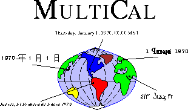

|
| MultiCal |
| Fast I/O | |
| Granularity | |
| Indeterminacy | |
| MultiCal | |
| Now | |
| TADT | |
| Timestamps | |
| TSQL2 | |
| Curtis Dyreson | |
| Home | |
| Publications | |
| Projects | |
| Software | |
| Demos | |
| Teaching | |
| Contact me | |

MultiCal is a public domain software system that has temporal operations over multiple calendars and languages. MultiCal is designed as an add-on to existing relational or object-oriented databases, but can also provide temporal support for other applications. For more information travel the web to the University of Arizona.Curtis E. Dyreson © 1993-2001. All rights reserved.